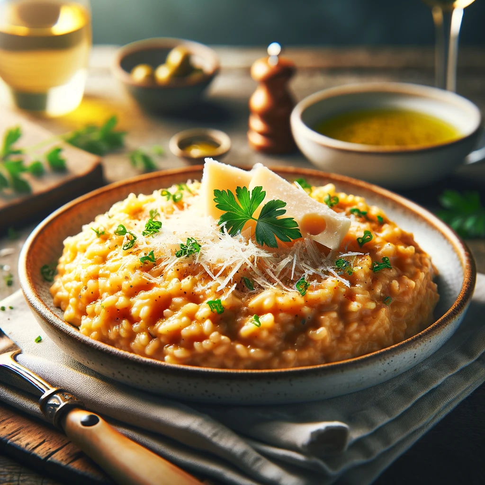

Creamy Parmesan Risotto

Italian cuisine is celebrated worldwide for its flavorful dishes and exquisite simplicity, and risotto is a shining example of this culinary philosophy. This creamy Parmesan risotto recipe encapsulates the essence of Italian cooking, combining basic ingredients to create a dish bursting with flavor.
Ingredients
- 1 cup Arborio rice
- 4 cups chicken or vegetable broth
- 1 onion, finely chopped
- 2 cloves garlic, minced
- 1/2 cup white wine
- 1/2 cup freshly grated Parmesan cheese
- 2 tablespoons unsalted butter
- 2 tablespoons olive oil
- Salt and pepper to taste
- Fresh parsley for garnish
Method:
- Sauté the Aromatics:In a large pan, heat olive oil over medium heat. Add the onion and garlic, sautéing until the onion is translucent.
- Toast the Rice: Stir in the Arborio rice, toasting it lightly until it becomes slightly translucent.
- Deglaze with Wine: Pour in the white wine and stir until it's mostly absorbed.
- Add the Broth: Gradually add the broth, one cup at a time, stirring constantly. Allow each addition to be absorbed before adding the next.
- Cook to Creaminess: Continue to cook and stir until the rice is tender and the mixture is creamy.
- Finish with Cheese and Butter: Remove from heat. Stir in the Parmesan cheese and butter. Season with salt and pepper.
- Garnish and Serve: Garnish with fresh parsley and serve immediately.
This risotto is luxuriously creamy with a delightful bite from the Arborio rice. The Parmesan cheese adds a depth of flavor that is both rich and comforting. Paired with a glass of white wine, this dish is perfect for a cozy dinner or a special occasion. The simplicity of the ingredients and the harmony of flavors in this Parmesan risotto make it a quintessential Italian dish that will transport your taste buds to the heart of Italy.
Back to main menu